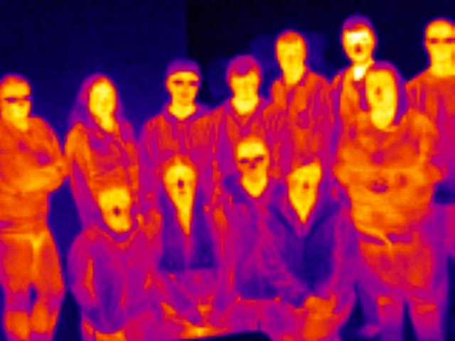

Teaching
I am an Associate Professor in the Department of Physics and Astronomy at Ithaca College. Teaching is an important aspect of my career. My goal is to realize the teacher-scholar ideal: combining an active research program with best practice teaching methods to provide students both state of the science knowledge and problem-solving skills.
I teach classes across the physics curriculum and an Integrated Core Curriculum course on the science and politics of climate change. Physics courses that I have taught include:
- PHYS 101 Introduction to Physics I
- PHYS 110 Introductory Mathematical and Computational Methods for Physics
- PHYS/ENVS 147 Time to Act: The Science and Politics of Climate Change
- PHYS/ENVS 148 Forecasting the Skies: An Introduction to Weather
- PHYS 260 Intermediate Physics Laboratory
- PHYS 280 Learning Assistant Practicum
- PHYS 301/310 Mathematical Methods of Physics
- PHYS 305/323 Electromagnetism
- PHYS 311 Classical Mechanics (numerical modeling recitation)
- PHYS 360 Advanced Physics Laboratory
- PHYS 470 Special Topics in Advance Physics: Fluid Dynamics
- PHYS 497 Senior Thesis I
- PHYS 498 Senior Thesis II

Eric teaches Connor about NOₓ measurements at the Whiteface Mountain Field Station.

My Climate Change Science class as viewed through a thermal (IR) imager.